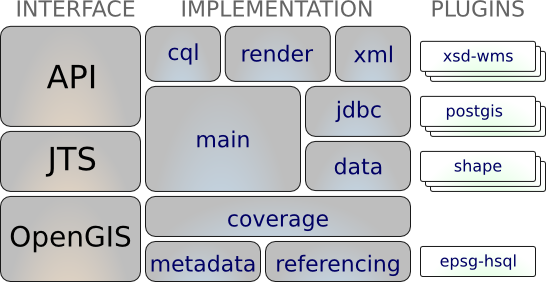

GeoTools¶
GeoTools est une bibliothèque Java libre (LGPL) qui propose des méthodes conformes aux standards pour la manipulation de données géospatiales et utilise des structures de données basées sur les spécifications de l’Open Geospatial Consortium (OGC).
GeoTools est utilisé par un grand nombre de projets incluant des services web, des outils en ligne de commande et des applications bureautiques. Les applications de l’OSGeoLive qui embarquent GeoTools sont: 52 North SOS, 52 North WPS, AtlasStyler, Geomajas, Geopublisher, GeoServer, and uDig.
{kind=link}
Caractéristiques principales¶
Définition d’interfaces pour les concepts clefs et les structures de données
- Support de “Geometry” intégré fournit par JTS Topology Suite (JTS)
- Filtres spatiaux et attributaires utilisant la spécification OGC Filter Encoding
Une API d’accès la donnée propre supportant l’accès aux objets géographiques, les transactions et le verrouillage entre les threads
- Accès aux données SIG dans plusieurs formats et bases de données spatiales
- Support des système de coordonnées et des transformations
- Travaille avec un très grand nombre de projections cartographiques
- Filtre et analyse la donnée en termes d’attributs spatiaux et non-spatiaux
Un moteur de rendu sans état, à faible mémoire, particulièrement utile dans les environnements côté serveur.
- compose et affiche des cartes avec des styles complexes
Technologie puissante de parsage assistée par des schémas utilisant XML Schema pour faire la liaison avec le contenu GML
- La technologie de parsage / encodage est fournie avec des bindings pour de nombreux standards OGC dont GML, Filter, KML, SLD et SE.
GeoTools Plugins: système de plugin ouvert vous permettant d’apprendre à la bibliothèque des formats supplémentaires
- Plugins pour le projet ImageIO-EXT permettant à GeoTools de lire d’autres formats raster à partir de GDAL
Extensions GeoTools
- Fournir des capacités additionnelles construites en utilisant les facilités spatiales de la bibliothèque cœur.
- Les extensions fournissent une prise en charge de graphes et de réseau (pour trouver le chemin le plus court), la validation, un client serveur de cartes Web, des bindings pour le parsage et l’encodage xml et Color Brewer.
GeoTools non supporté
- GeoTools fait également partie d’une communauté plus large avec un espace de mise en œuvre qui sert à encourager de nouveaux talents et à promouvoir l’expérimentation.
- Quelques points forts sont le support de swing (utilisé dans les tutoriels de geotools), swt, le support des processus locaux et web, la symbologie supplémentaire, les formats de données additionnels, la génération de grilles et les quelques implémentations de la Geometry ISO.
Formats supportés¶
formats raster et accès à la donnée:
arcsde, arcgrid, geotiff, grassraster, gtopo30, image (JPEG, TIFF, GIF, PNG), imageio-ext-gdal, imagemoasaic, imagepyramid, JP2K, matlab.
Support de la base de données « jdbc-ng »:
db2, h2, mysql, oracle, postgis, spatialite, sqlserver.
Formats vecteur et accès à la donnée:
app-schema, arcsde, csv, dxf, edigeo, excel, geojson, org, property, shapefile, wfs.
Bindings XML:
Structures de données Java et bindings fournis pour les cas suivants: xsd-core (types xml simples), fes, filter, gml2, gml3, kml, ows, sld, wcs, wfs, wms, wps, vpf.
Parser/encoders additionnels de Geometry, Filter et Style disponibles pour les applications DOM et SAX.
Standards implémentés¶
Support de nombreux standards de l’Open Geospatial Consortium (OGC):
- Structures de données des Style Layer Descriptor / Symbology Encoding OGC et moteur de rendu
- support du modèle General Feature de l’OGC incluant le support de Simple Feature Access for SQL
- représentation OGC Grid Coverage d’information raster
- Filter et Common Constraint Language (CQL) OGC
- Clients pour Web Feature Service (WFS), Web Map Service (WMS) et support expérimental pour Web Processing Service (WPS)
- Geometry ISO 19107
Détails¶
Site Internet: https://geotools.org/
Licence: LGPL
Plateformes supportées: Cross Platform Java 8,9,10
Interface de l’API: Java
Support: communication et support